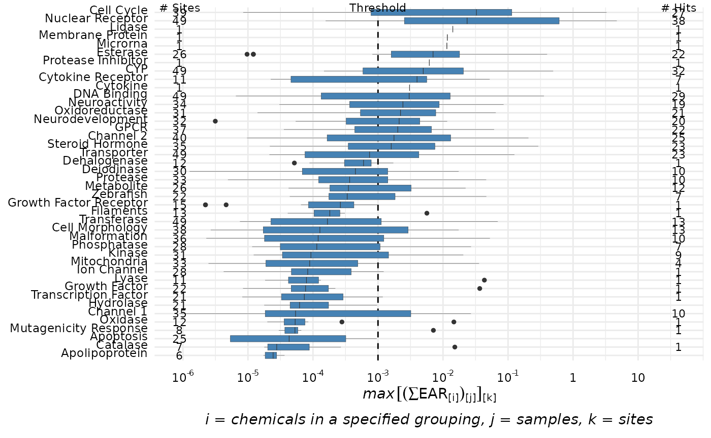
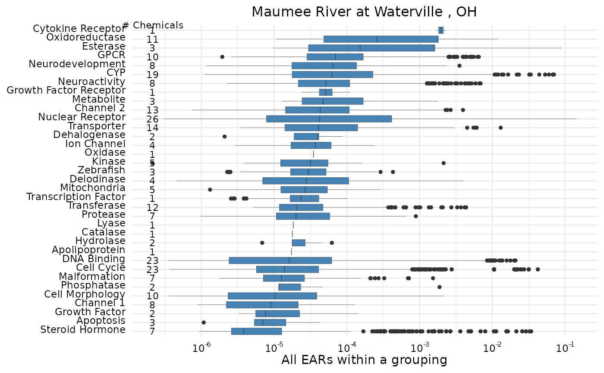
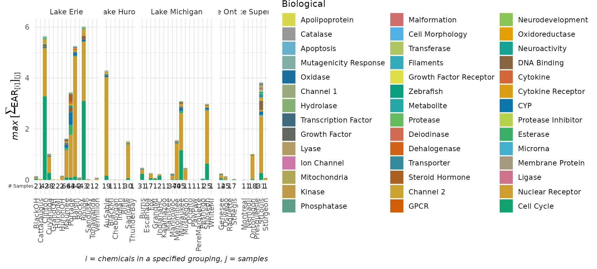
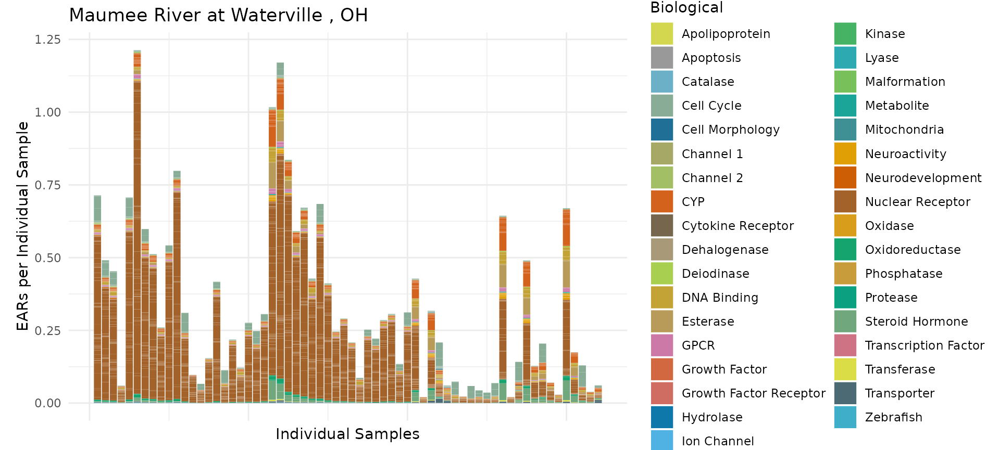
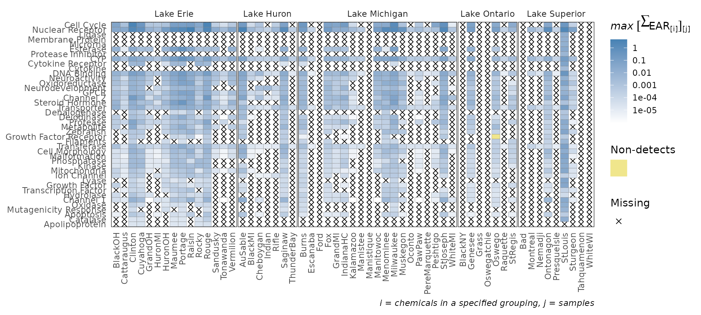
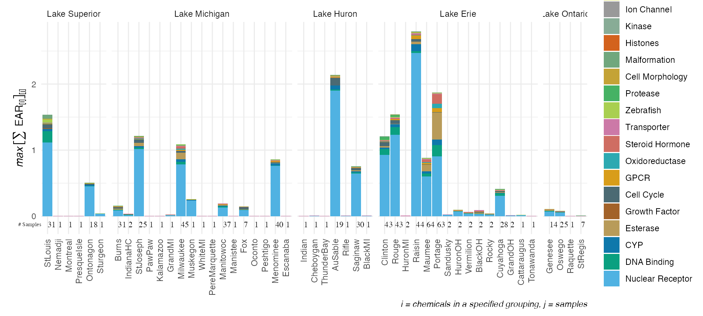
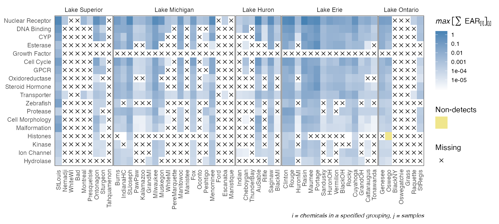

toxEval Analysis Example
An example data set has been provided from a publication that investigated trace organic compounds in water samples from Great Lakes tributaries (Baldwin et al., 2016). The provided data removes some samples and many non-detects to optimize the size of the sample data.
The following workflow provides examples of toxEval analyses using these data. The user may substitute another data set of interest in place of the Great Lakes tributary data. Extensive user-customization is possible beyond the examples provided here.
Load Data
Once the data is prepared as described in the Prepare Data vignette, it can be loaded into R using the create_toxEval function.
library(toxEval) path_to_tox <- system.file("extdata", package="toxEval") file_name <- "OWC_data_fromSup.xlsx" full_path <- file.path(path_to_tox, file_name) tox_list <- create_toxEval(full_path)
The create_toxEval function will check that required columns are included, and give messages if there are unusual issues such as sites that don’t match up with data, or chemicals that don’t match up with chemical information.
Setup Analysis
The next step for exploring the data in toxEval is to create a data frame that includes the EAR calculations for each measurement. This data frame (chemical_summary) is required for most functions within toxEval. Since one chemical may have many more than one “endPoint”, this data frame may be much larger then the “Data” sheet in the Excel file. The general workflow for creating this data frame is:
ACC <- get_ACC(tox_list$chem_info$CAS) ACC <- remove_flags(ACC) cleaned_ep <- clean_endPoint_info(end_point_info) filtered_ep <- filter_groups(cleaned_ep) chemical_summary <- get_chemical_summary(tox_list, ACC, filtered_ep)
What’s going on with this workflow?
get_ACC
The get_ACC function will retrieve the activity concentration at cutoff (ACC) values for the specified chemicals. The data was originally downloaded for toxEval on October 2015 from ToxCast. The data were combined from files in the “INVITRODB_V2_LEVEL5” directory. At the time of the toxEval package release, this information was found here in the “ToxCast & Tox21 Data Spreadsheet” data set. The function get_ACC will convert the ACC values in the ToxCast database from units of log(\(\mu\)M) to units of \(\mu\)g/L, and reformat the data to a format that can be used in toxEval.
The decision to use ACC values compared to AC50 (concentration at half-maximal activity) was described in Blackwell 2017. Briefly, “ACC is less prone to violating assumptions underlying relative potency estimation”.
remove_flags
Through the ToxCast program quality assurance procedures, information is examined and at times, it is necessary to assign a data quality flag to a specific chemical:assay result. A toxEval user may want to include or exclude assay results with certain flags depending on the objectives of a given study. Assay results with specific data quality flags assigned to them can be removed based on their designated flag with the remove_flags function. The flags included in ToxCast, and the associated flagsShort value (used in the remove_flags function) are as follows:
| Flags | flagsShort |
|---|---|
| Borderline active | Borderline |
| Only highest conc above baseline, active | OnlyHighest |
| Only one conc above baseline, active | OneAbove |
| Noisy data | Noisy |
| Hit-call potentially confounded by overfitting | HitCall |
| Gain AC50 < lowest conc & loss AC50 < mean conc | GainAC50 |
| Biochemical assay with < 50% efficacy | Biochemical |
| Less than 50% efficacy | LessThan50 |
| AC50 less than lowest concentration tested | ACCLessThan |
The function is written to exclude results with the flags “Borderline”, “OnlyHighest”, “GainAC50”, “Biochemical” as a default. If the user prefers a different list, the full list must be specified (default values will be ignored).
This function is specific to the provided data from the ToxCast database (and therefore not customizable to other toxicity data sets). The flags listed above are the only options within that set of data. Some endpoint/chemical combinations have multiple flags listed.
clean_endPoint_info
The clean_endPoint_info function cleans up the end_point_info table from ToxCast by filtering assays considered in the analysis based on information provided in the methods section of Blackwell et al., 2017. Specifically, this function hard-codes the removal of endPoints that are ATG sources with signal loss and NVS with signal gain (basically: some assay/signal combinations are removed because they target non-specific endpoints). Also, this function adds some additional categories to “intended_target_family” and “intended_target_family_sub” as described in the paper linked above.
filter_groups
|
This function takes the data frame from ‘end_point_info’ and filters the endpoints in 3 steps. First, the user specifies the “groupCol” argument, which is a column header from The default category (“groupCol”) is “intended_target_family”. Depending on the study, other categories may be more relevant. To discover options, examine the column names in the data frame names(end_point_info) The provided By default, the BioSeek set of assays are removed. The list of assays and their short names are in the Assay Name table to the right. |
|
The default grouping of ToxCast endPoints is “intended_target_family”, but depending on the analysis, it may be more appropriate to use other grouping categories. The best resource on these groupings is the “ToxCast Assay Annotation Data User Guide” directly from EPA link. This guide defines “intended_target_family” as “the target family of the objective target for the assay”. Much more detail can be discovered in that documentation.
To change the default, specify a grouping in the groupCol argument of the filter_groups function. For example:
cleaned_ep <- clean_endPoint_info(end_point_info) filtered_ep <- filter_groups(cleaned_ep, groupCol = "intended_target_family", assays = c("ATG","NVS", "OT", "TOX21", "CEETOX", "APR", "CLD", "TANGUAY", "NHEERL_PADILLA","NCCT_SIMMONS", "ACEA"), remove_groups = c("Background Measurement", "Undefined"))
What is happening here is that the supplied data frame end_point_info is first cleaned up. That means that the first letter of each category is capitalized (except acronyms), and certain endpoints are removed as discussed above. Next, the clean_endPoint_info output is filtered to just the “intended_target_family” category. The assay BioSeek is removed (it is the only one not included in the possible list of assays). Finally, of all the groups within intended_target_family, the end points designated “Undefined” and “Background Measurement” are removed based on the “remove_groups” arguments. The options for “remove_groups” are:
unique(cleaned_ep$intended_target_family)
## [1] "Nuclear Receptor" "Cell Cycle"
## [3] "Cell Morphology" "DNA Binding"
## [5] "Background Measurement" "Growth Factor"
## [7] "Cell Adhesion Molecules" "Cytokine"
## [9] "GPCR" "Kinase"
## [11] "Protease" "Misc Protein"
## [13] "Protease Inhibitor" "CYP"
## [15] "Esterase" "Phosphatase"
## [17] "Hydrolase" "Oxidoreductase"
## [19] "Lyase" "Methyltransferase"
## [21] "Ion Channel" "Transporter"
## [23] "Steroid Hormone" "Undefined"
## [25] "Transferase" "Zebrafish"
## [27] "Malformation" "Histones"
## [29] "NA" "Deiodinase"Note: the function clean_endPoint_info converted NA groups to “Undefined”. Using other categories, the options for “remove_groups” are the unique output of that category. For instance, if it was decided that “intended_target_family_sub” was more appropriate, the group options would be found by running:
unique(end_point_info$intended_target_family_sub)
The clean_endPoint_info function is really only useful when using the “intended_target_family” and “intended_target_family_sub” categories.
get_chemical_summary
The function get_chemical_summary takes the measured user concentration data from the output of create_toxEval, and joins the data with the endPoint information provided by ToxCast to compute EAR values, as filtered by the functions described above. The output of this function is where you find EAR values for every chemical/endpoint combination.
Visualize Data
There are numerous ways to visualize data within toxEval that can serve different objectives. Each function described below provides a unique method for exploring EAR data that can be customized to fit a user’s specific study objectives. All of these functions rely on EAR values computed by the get_chemical_summary function.
Most of the graphing and table functions have an argument “mean_logic”. This allows the user to decided if the mean (TRUE) of the site or the maximum (FALSE) should be displayed. It depends on the type of analysis that is being done on which value will be more appropriate. “mean_logic” defaults to FALSE. If the sites have the same number of samples, and the goal is to explore a representative view of the data, than using TRUE would be more appropriate.
plot_tox_boxplots
The plot_tox_boxplots function creates a set of boxplots representing EAR values computed from the original input data that was modified by the processing steps above, and dependent on the choice of several input options. See “Summarizing the data” for a description of how the EAR values are computed, aggregated, and summarized. Choosing “Chemical Class” in the category argument will generate separate boxplots for each unique class. “Chemical” will generate boxplots for each individual chemical, and “Biological” will generate boxplots for each group in the selected ToxCast annotation.
plot_tox_boxplots(chemical_summary, "Biological")

# Other options: # plot_tox_boxplots(chemical_summary, "Chemical Class") # plot_tox_boxplots(chemical_summary, "Chemical")
It is also possible to display a threshold line using the hit_threshold argument. The graph will then include the number of sites with detections, the threshold line, and the number of “hits” indicating how many sites that have EAR values exceeding the hit_threshold.
plot_tox_boxplots(chemical_summary, category = "Biological", hit_threshold = 0.001)

The graph shows a slightly different result for a single site. In the example below, a subset of data from the Maumee River is defined that will be used throughout this document to facilitate single site examples.
library(dplyr) maumee <- filter(chemical_summary, shortName == "Maumee") maumee_site <- filter(tox_list$chem_site, `Short Name` == "Maumee")
In this example, the function plot_tox_boxplots is used with the subset of data from the Maumee River. For this single site graph, the number of chemicals that were detected and have associated endpoint ACCs represented are displayed.
plot_tox_boxplots(maumee, "Biological",title = maumee_site$Fullname[1])

See “Box Plot Details” for a description of what the lines and dots represent in these box plots.
plot_tox_stacks
The plot_tox_stacks function creates a set of stacked bar charts representing EAR values computed from the original input data that was modified by the processing steps above, and dependent on the choice of several input options. See “Summarizing the data” for a description on how the EAR values are computed, aggregated, and summarized. Choosing “Chemical Class” in the category argument will generate separate stacked bars for each unique class. “Chemical” will generate stacked bars for each individual chemical, and “Biological” will generate stacked bars for each group in the selected ToxCast annotation. There is an option include_legend to turn on and off the legend. It may be impractical for instance to show the legend for “Chemical” if there are hundreds of chemicals.
plot_tox_stacks(chemical_summary, chem_site = tox_list$chem_site, category = "Biological")

# More options: # plot_tox_stacks(chemical_summary, # chem_site = tox_list$chem_site, # category = "Chemical Class") # plot_tox_stacks(chemical_summary, # chem_site = tox_list$chem_site, # category = "Chemical", include_legend = FALSE)
The graph shows a slightly different result for a single site. The graph now shows each individual sample. The EAR values are no longer the mean or maximum at the site, but rather the sums of the individual EAR values.
plot_tox_stacks(maumee, maumee_site,"Biological", title = maumee_site$Fullname[1])

plot_tox_heatmap
The plot_tox_heatmap function creates a heat (tile) map with sites on the x-axis, a specified grouping on the y-axis (defined by the category argument), and color shading defining the mean or maximum EAR. See “Summarizing the data” for a description on how the EAR values are computed, aggregated, and summarized. The y-axis grouping can be “Biological”,“Chemical Class”, or “Chemical”. When specifying the “Chemical” option, a secondary y-axis is automatically included to group chemicals into chemical class. The function computes default breaks for the color scale to match the spread of the data, but breaks can also be customized with the breaks argument.
This is a function where it may be ideal to create a custom order to the sites (for example, west-to-east). See the above section “Custom configuration” for instructions on how to convert the character vector sites to a factor with ordered levels.
plot_tox_heatmap(chemical_summary, chem_site = tox_list$chem_site, category = "Biological")

# More options: # plot_tox_heatmap(chemical_summary, # chem_site = tox_list$chem_site, # category = "Chemical Class") # plot_tox_heatmap(chemical_summary, # chem_site = tox_list$chem_site, # category = "Chemical")
plot_tox_endpoints
The plot_tox_endpoints function creates a set of boxplots representing EAR values for each endPoint based on a selected filter. The data is first filtered down to what group is specified in the filterBy argument. The filterBy argument must match one of the unique options in the category. For example, if the category is “Chemical Class”, then the filterBy argument must be one of the defined “Chemical Class” options such as “Herbicide”.
After the data is filtered, a boxplot is generated for each endPoint. The EAR values that are used to create the boxplots are the mean or maximum (as defined by mean_logic) for each site as described in “Summarizing the data”.
plot_tox_endpoints(chemical_summary, top_num = 10, category = "Biological", filterBy = "Cell Cycle")

# More options: # plot_tox_endpoints(chemical_summary, # category = "Chemical Class", # filterBy = "PAHs") # plot_tox_endpoints(chemical_summary, # category = "Chemical", # filterBy = "Atrazine")
See “Box Plot Details” for a description of what the lines and dots represent in these box plots.

How to save a plot?
The ggsave function can be used to save plots. This technique does have an advantage by taking away much of the guessing game for how big or resolved the plot should be. For RStudio users, the size by default is determined by how large the “Plots” tab is sized. This could be handy when sharing plots with colleagues during project analysis. An example of using the ggsave function is:
ep_plot <- plot_tox_endpoints(chemical_summary, category = "Biological", filterBy = "Cell Cycle") # To save a png: ggsave(ep_plot, file = "ep_plot.png") # To save a pdf: ggsave(ep_plot, file = "ep_plot.pdf")
Tables
Several tables are also provided in toxEval. Each table can be returned in the form of a data frame (to be used further in R), or a DT table, which is a nicely formatted HTML table. For general exploration, the DT options provide helpful functionality. To use the outputs in R for further analysis, the data frame options are needed. All of these functions rely on EAR values computed by the get_chemical_summary function.
rank_sites_DT
The rank_sites_DT (interactive table:DT option) and rank_sites (data frame option) functions create tables with one row per site. There are columns of the maximum or mean EAR (depending on the mean_logic argument) for each category (“Chemical Class”, “Chemical”, or “Biological”). Additionally, columns specifying the frequency of the max or mean EAR exceeding a user specified hit_threshold are provided.
library(DT) options(DT.options = list(pageLength = 5)) rank_df <- rank_sites(chemical_summary, category = "Biological", hit_threshold = 0.1) # To create an interactive table: rank_sites_DT(chemical_summary, category = "Biological", hit_threshold = 0.1)
When rank_sites_DT is applied not to multiple sites (as above) but to a single site (as below), the tables show slightly different results. Instead of multiple columns for category, there is now 1 row per category (since the site is known).
rank_sites_DT(maumee, category = "Biological")
hits_summary_DT
The hits_summary_DT (DT option) and hits_summary (data frame option) functions create tables with several rows per site depending on which categories have resulting EARs above the threshold as defined by a user specified hit_threshold. For example, if “Biological” is the category, and a site has hits above a threshold for “DNA Binding” and “Nuclear Receptors”, that site will have 2 rows of data in this table.
For each row, there are 4 columns. Site and category (as defined by the category argument) define the row. “Hits per Sample” are how many samples exceeded the hit_threshold for the specified category. “Number of Samples” is how many individual samples were collected at an individual site based on unique date.
hit_df <- hits_summary(chemical_summary, category = "Biological", hit_threshold = 0.1 ) hits_summary_DT(chemical_summary, category = "Biological", hit_threshold = 0.1)
When hits_summary_DT is applied not to multiple sites (as above) but to a single site (as below), the tables show slightly different results. Rather than one row per site/category, there is one row per category.
hits_summary_DT(maumee, category = "Biological")
endpoint_hits_DT
The endpoint_hits_DT (DT option) and endpoint_hits (data frame option) functions create tables with one row per endPoint, and one column per category(“Biological”, “Chemical”, or “Chemical Class”). The values in the table are the number of sites where the EAR exceeded the hit_threshold in that endpoint/category combination. If the category “Chemical” is chosen, an “info” link is provided to the chemical/endpoint information available in the “Comptox Dashboard”. .
ep_hits <- endpoint_hits(chemical_summary, category = "Biological", hit_threshold = 0.1) endpoint_hits_DT(chemical_summary, category = "Biological", hit_threshold = 0.1)
When endpoint_hits_DT is applied not to multiple sites (as above) but to a single site (as below), the tables show slightly different results. Rather than the number of sites with hits above a threshold, the number of samples with hits is presented.
endpoint_hits_DT(maumee, category = "Biological")
hits_by_groupings_DT
The hits_by_groupings_DT (DT option) and hits_by_groupings (data frame option) functions create tables with one row per category(“Biological”, “Chemical”, or “Chemical Class”). The columns indicate the “Biological” groupings. The values in the table signify how many sites have exceeded the hit_threshold for that particular “Biological”/category combination. If the user chooses “Biological” as the category, it is a simple 2-column table of “Biological” groupings and number of sites (nSites).
site_df <- hits_by_groupings(chemical_summary, category = "Chemical Class", hit_threshold = 0.1) hits_by_groupings_DT(chemical_summary, category = "Chemical Class", hit_threshold = 0.1)
The tables show slightly different results for a single site, presenting the number of samples where EAR exceeded the hit_threshold rather than the number of sites.
hits_by_groupings_DT(maumee, category = "Chemical Class")
Maps
The function make_tox_map creates a leaflet map of the data. This function places symbols at the location of each site in the data file that represent the magnitude of EAR (color) and the number of samples in the data set (size). This is the only function that requires “dec_lon” and “dec_lat” (decimal longitude and decimal latitude) in the chem_site argument. There is an option (“mean_logic”) to set whether to show the mean or maximum EAR at each site.
make_tox_map(chemical_summary, chem_site = tox_list$chem_site, category = "Biological")
# More options: # make_tox_map(chemical_summary, # chem_site = tox_list$chem_site, # category = "Chemical Class") # make_tox_map(chemical_summary, # chem_site = tox_list$chem_site, # category = "Chemical")
Custom configuration
There are numerous ways to customize the display of the graphics. Included below are two examples of customization options.
- Trim chemical class names to make the labels more readable in graphs
#Trim some names: levels(chemical_summary$Class)[levels(chemical_summary$Class) == "Antimicrobial Disinfectants"] <- "Antimicrobial" levels(chemical_summary$Class)[levels(chemical_summary$Class) == "Detergent Metabolites"] <- "Detergent" levels(chemical_summary$Class)[levels(chemical_summary$Class) == "Flavors and Fragrances"] <- "Flavor/Fragrance"
- Rearrange the order of sites and lakes within the graphics: This example converts the site and lake lists to factors and orders these Great Lakes tributary sites in a logical manner by lake and location within each lake:
#Ordering the sites to flow "downstream" of the Great Lakes: sitesOrdered <- c("StLouis","Nemadji","WhiteWI","Bad","Montreal", "PresqueIsle","Ontonagon","Sturgeon","Tahquamenon","Burns", "IndianaHC","StJoseph","PawPaw","Kalamazoo","GrandMI", "Milwaukee","Muskegon","WhiteMI","PereMarquette","Manitowoc", "Manistee","Fox","Oconto","Peshtigo","Menominee", "Indian","Cheboygan","Ford","Escanaba","Manistique", "ThunderBay","AuSable","Rifle","Saginaw","BlackMI", "Clinton","Rouge","HuronMI","Raisin","Maumee", "Portage","Sandusky","HuronOH","Vermilion","BlackOH", "Rocky","Cuyahoga","GrandOH","Cattaraugus","Tonawanda", "Genesee","Oswego","BlackNY","Oswegatchie","Grass", "Raquette","StRegis") tox_list$chem_site$`Short Name` <- factor(tox_list$chem_site$`Short Name`, levels = sitesOrdered) lakes_ordered <- c("Lake Superior", "Lake Michigan", "Lake Huron", "Lake Erie", "Lake Ontario") tox_list$chem_site$site_grouping <- factor(tox_list$chem_site$site_grouping, levels=lakes_ordered)
The plot_tox_stacks and plot_tox_heatmap functions will be affected by these site level adjustments. Compare the output here to what was shown in the sections plot_tox_heatmap and plot_tox_stacks above.
summary_with_levels <- get_chemical_summary(tox_list, ACC, filtered_ep) plot_tox_stacks(summary_with_levels, tox_list$chem_site, "Biological")

plot_tox_heatmap(summary_with_levels, tox_list$chem_site, "Biological")

Disclaimer
This software has been approved for release by the U.S. Geological Survey (USGS). Although the software has been subjected to rigorous review, the USGS reserves the right to update the software as needed pursuant to further analysis and review. No warranty, expressed or implied, is made by the USGS or the U.S. Government as to the functionality of the software and related material nor shall the fact of release constitute any such warranty. Furthermore, the software is released on condition that neither the USGS nor the U.S. Government shall be held liable for any damages resulting from its authorized or unauthorized use.